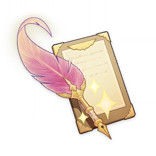

Teyvat & Unknown · Books & Literature
Dreams of the Ancient Capital
A Simulanka storybook follows Lycia after a black dragon destroys her home; its dreamlike ending leaves the dragon’s identity and the tale’s meaning open.

A book from Simulanka
Dreams of the Ancient Capital is a quest item found in the Broken Sea area of Simulanka, on Whispering Isle. The item was introduced with the Version 4.8 limited-time area and is separate from the ordinary book collections cataloged in the Archive. Its placement among event mementos is part of its context; it is not described as a surviving document from a Teyvat capital.
The game's item record gives no author or region. A note at the back addresses the writer about telling stories involving dragons, but it does not provide a name or establish a connection to a known author.
Lycia's journey
The story follows Lycia after a black dragon destroys her homeland. She meets a former royal guard and asks him to teach her swordsmanship so she can seek revenge. He has lost his resolve, and their exchange turns toward the difference between learning to fight and finding a reason to keep going.
Lycia later meets an owl that guards the keys to the Kingdom of Dreams. After answering its questions, she goes before a dream goddess and trades a lock of golden hair for the power to draw another being into a dream. The story presents this as a fairy-tale bargain within Lycia's fictional world, not as a documented ability or ritual in Teyvat's history.
The dragon and the dream
Lycia uses the new power on the black dragon, which the tale describes as knowing only black and white. She shows it many imagined worlds and offers a way back to the day before it reached her hometown. The story then returns to Lycia at home, where a black-haired stranger arrives and refers to the golden color of the stars in his dream.
The ending folds the dream back into an ordinary doorstep scene. It does not plainly state whether the dragon has been persuaded, whether time has changed, or how the stranger relates to the dream. The text supports a reading about empathy and the possibility of a world beyond revenge, but it leaves the exact mechanics and outcome unresolved.
How to read the title and imagery
Despite its title, the item does not identify a real ancient capital or connect its setting to Old Mondstadt. Nothing in its description or story names Decarabian, the Mondstadt rebellion, Sal Vindagnyr, or a specific dragon from Teyvat's history. The book is best treated as a story within Simulanka unless another in-game source makes a more direct link.
The dragon, dream kingdom, goddess, and promise to return to an earlier night invite comparison with Simulanka's other fairy tales. The note at the back hints that the writer has a recurring interest in dragons, but the game does not name the writer or provide a key that maps Lycia and the stranger onto specific people. Similar imagery alone is not proof of an allegory.
What the record establishes
The record establishes an in-game fairy tale about Lycia, a black dragon, a former guard, a dream kingdom, and a final encounter with a stranger. It was placed in Simulanka's Whispering Isle chamber during the Version 4.8 event and has no listed author or Teyvat region.
It does not establish Old Mondstadt provenance, a date more than 2,600 years ago, authorship by an anonymous citizen, or a confirmed identity for the dragon. Those claims in earlier catalog copy came from the title's wording rather than the item itself and have been removed.
This is an original CoreGG reading guide, not an official HoYoverse article or a reproduction of the game text. Source links below identify the records used so you can check the original context.
Sources & references
Check these sources for the original game text and reference trail.